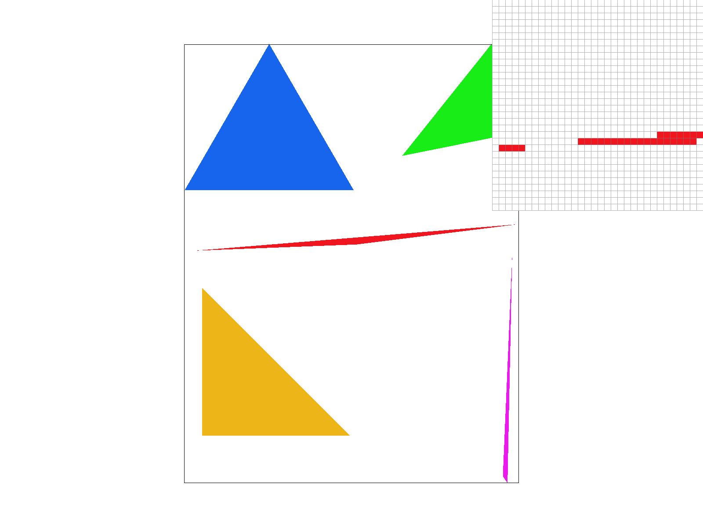
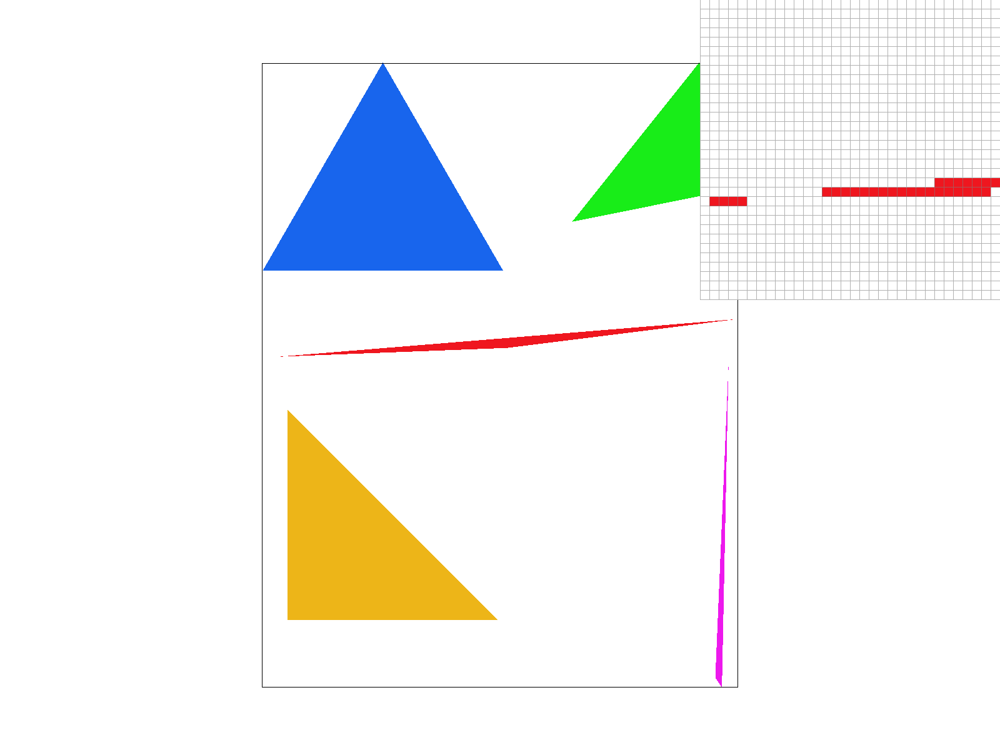
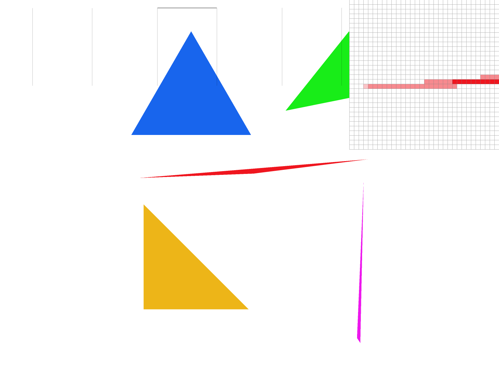
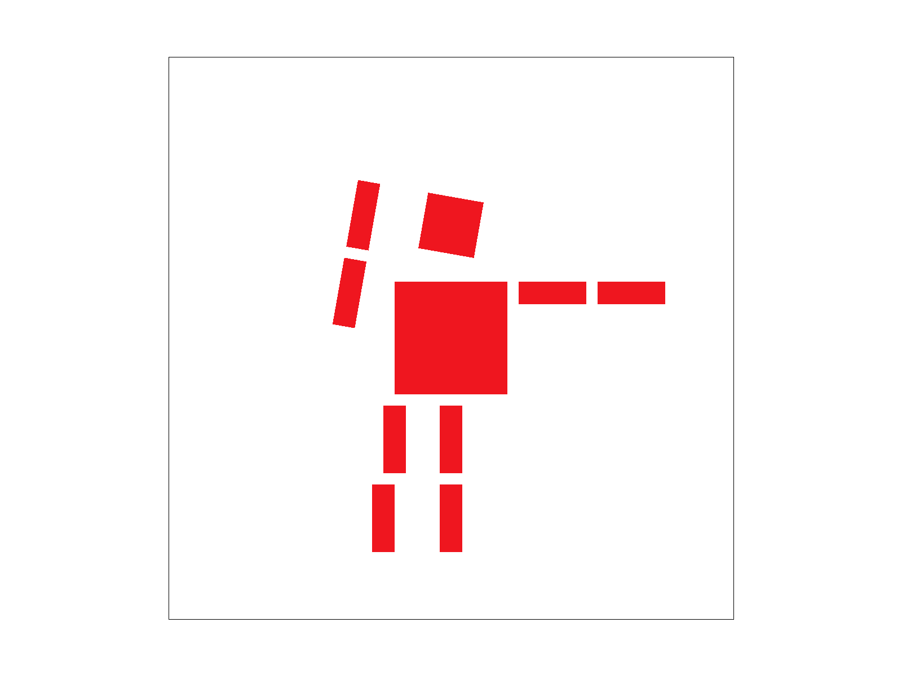
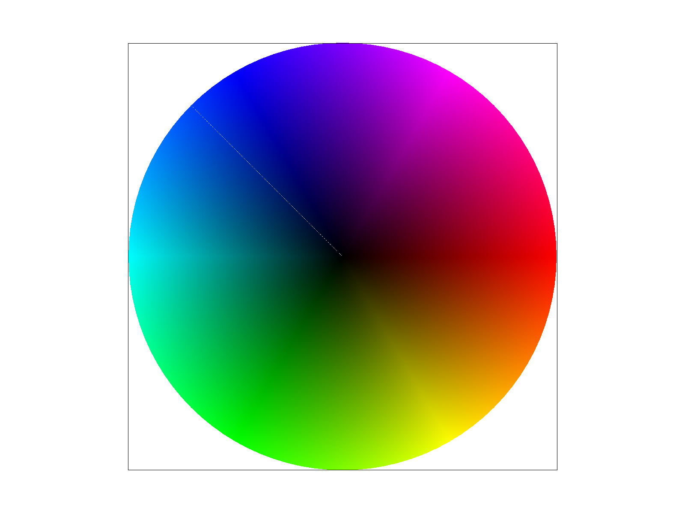
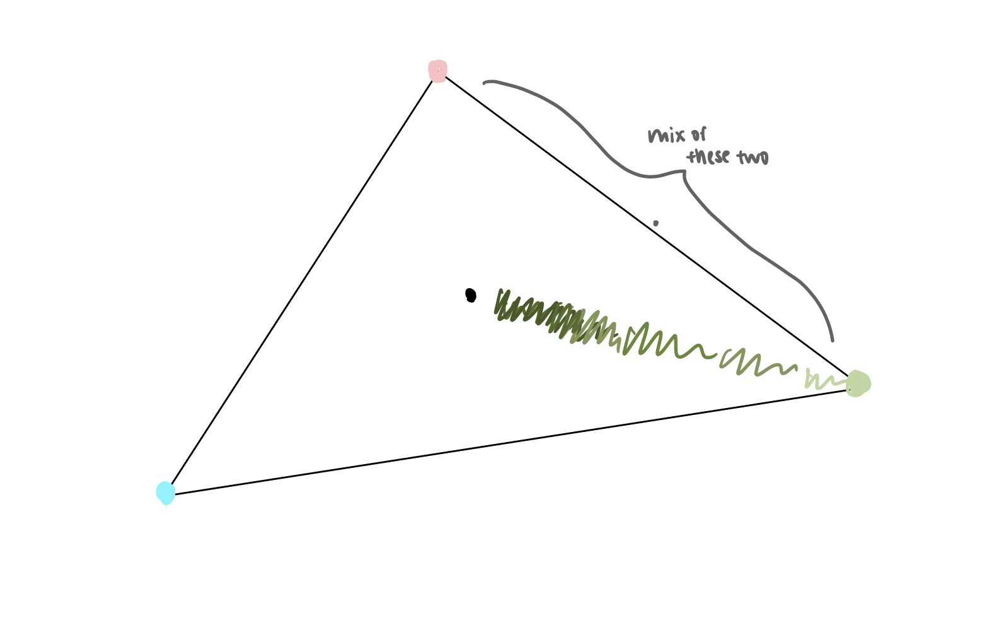
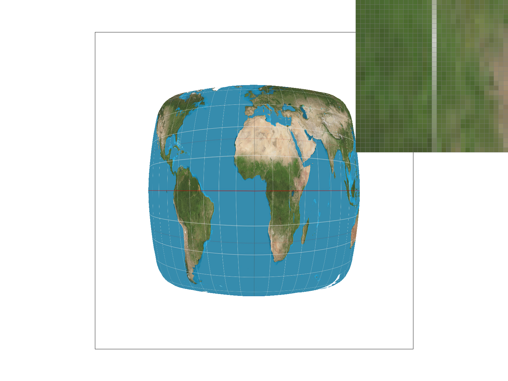
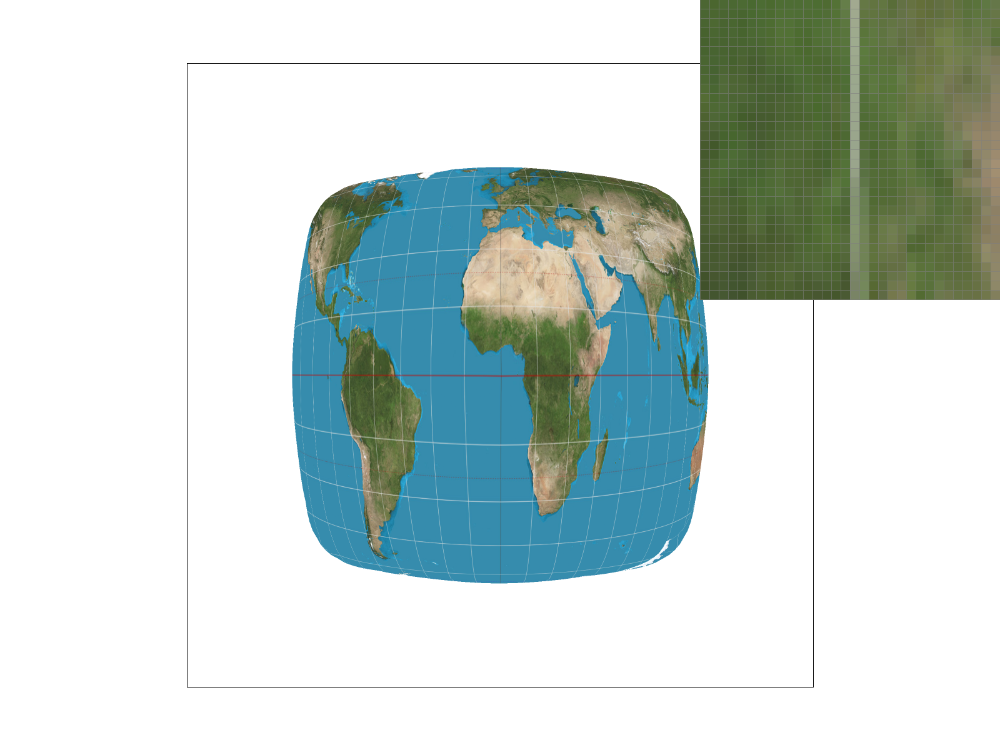

In this homework, I started with simple rasterization, using triangles to show the changes between normal rasterization and supersampling, which mediates jaggies. Then, I created a cute little robot man by transforming shapes! With translation, scaling, and rotation, anything is possible! Then moving onto colors... Previously everything was just one color, whether it be the triangles or the robot man. How boring! Now, with barycentric coordinates, I was able to complete a perfectly blended color wheel that shows a gradual gradient throughout. Lastly, we worked with textures. Adding pixel sampling and level sampling with mipmaps to see our pngs in all different forms.
Task 1: Drawing Single-Color Triangles
I rasterized the triangles by first calculating the bounds based on the parameters, getting a min and max bound for each x and y. When iterating through the pixels in the bounds, I first set the center at (.5,.5) as the instructions say. Then, with edge functions, I can check if each sample point is in the triangle formed by the three edges. If all three functions are positive or negative for a point, that means it is in the triangle, else, it is not. Lastly, I just use the fill_pixel() function to fill it in with the specified color if it is in bound.
My algorithm is no worse than one that checks each sample within the bounding box of the triangle. First, I create the bounding box before running the double for loop, which iterates each sample in the bounding box once. So this algorithm checks each sample within the bounding box once, and no more than that.
Here is a screenshot of test4.svg, with the pixel inspector on the edge of the red triangle.

Task 2: Antialiasing by Supersampling
Supersampling is useful because it takes multiple samples within each pixel and average them in order to antialias. My supersampling algorithm divides each pixel into sample_rate different subpixel locations, then tests each location against the triangle. I use sqrt_rate to compute the number of samples per pixel, then essentially does the same rasterizing triangle method as before in task 1. Except just filling the pixel directly with fill_pixel, I store the samples in the sample buffer then selects a color accordingly for the pixel.
Showing png screenshots of basic/test4.svg with the default viewing parameters and sample rates 1, 4, and 16 to compare them side-by-side. With higher sample rates, the corner of the triangle gets smoother and smoother and more blended.

Sample rate: 1

Sample rate: 4
Sample rate: 16
Task 3: Transforms
I tried to make him wave with his leg up! I did so with rotations and translations.

My cute robot!
Task 4: Barycentric coordinates
Barycentric coordinates can be represented as gravitational pulls. Think of it this way. A triangle of three planets, each have a different color and a different gravitational pull strength (the weight in the barycentric equation). The closer a pixel is to a point, the more of the color of the point it adopts. So the closest pixel to one of the three points (planets) that form a triangle would be the exact color of the point. The next one gains a bit of the color of the other point it's moving towards, and so on. Instead of doing this linearly though, in this part of the homework I chose to do barycentric coordinates with areas instead, since we are working with a 2D shape. It follows the exact same concepts explained, just the smaller the area is between the pixel and the point, the more of that color it contains.

test7.svg!!

Triangle picture for explanation
Task 5: "Pixel sampling" for texture mapping
Pixel sampling is essentially choosing certain pixels in order to represent a photo at a lower resolution. What we do with it is choose which subset of pixels to preserve to preserve the original image as much as possible. The nearest neighbor sampling method chooses the closest discrete texture value for each pixel and directly returns it. It results in a more pixelated result. I did this by simply retrieving the nearest texel color from the mipmap and returning that. In bilinear filtering, I retrieve the four surrounding texels for each texel we are trying to sample. Then I interpolate in both the x and y direction in order to find an average of the nearest four neighbors, and return that as the color of the texel. This creates a more smooth result, as we are taking the average and the textures and colors are more blended.
Here I have four png screenshots using nearest sampling at 1 sample per pixel, nearest sampling at 16 samples per pixel, bilinear sampling at 1 sample per pixel, and bilinear sampling at 16 samples per pixel. I chose the location of the white line, where the contrast shows the most between the different sampling.
Nearest sampling at 1 sample per pixel.
Nearest sampling at 16 samples per pixel.

Bilinear sampling at 1 sample per pixel.

Bilinear sampling at 16 samples per pixel.
The bilinear sampling, as expected, has a more blended texture, whereas the nearest neighbor sampling has a very pixelated texture. Bilinear works much better in the area that I zoomed in on since it has a very high contrast between the white latitude line, and the land around it. So when sampling the nearest pixel, if it happens to sample the land instead of the other parts of the white line, then that pixel would be land colored instead of white, losing a part of the line.
Task 6: "Level Sampling" with mipmaps for texture mapping
Level sampling includes zero, nearest, and linear. Where L_ZERO always samples from the highest resolution, L_NEAREST calculates a mipmap level based on the textures rate of change and samples from the closest already computed level. Then L_LINEAR performs linear interpolation between its two nearest levels it has access to for a smoothest transition of them all. I implemented these methods in Color Texture::sample where based on the different lsm, I wrote each sampling algorithm differently.
First for pixel sampling, nearest is speedy for lookup while bilinear is slower for lookup since it looks at more samples. They both use low memory. And nearest has bad antialiasing power while bilinear has better antialiasing power. Level sampling for L_ZERO is fast and uses a lot of memory, but the antialiasing is not good and has jaggies. For L_NEAREST and L_LINEAR are pretty similar, both a bit slower than L_ZERO and uses less memory. L_LINEAR creates the smoothest results with L_NEAREST in close second. Lastly, the number of samples per pixel is obviously faster when less samples are taken per pixel, and also lower in memory, but creates jaggies. The more samples, the slower, and higher memory usage, but better antialiasing power. I noticed my computer lagging sometimes when I tried to take more numbers of samples per pixel, meaning that is the most memory usage heavy out of all the methods.
I found this png myself from a website my friend showed me, with high quality graphics to choose from. Below are the four versions of the image specified on the spec.